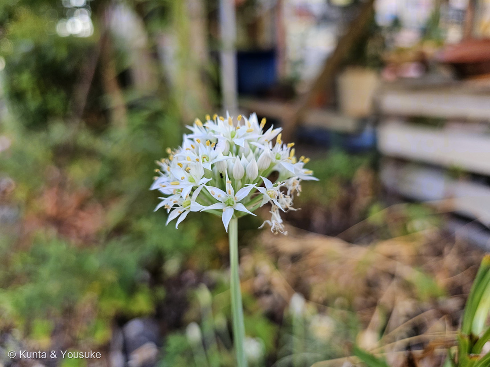
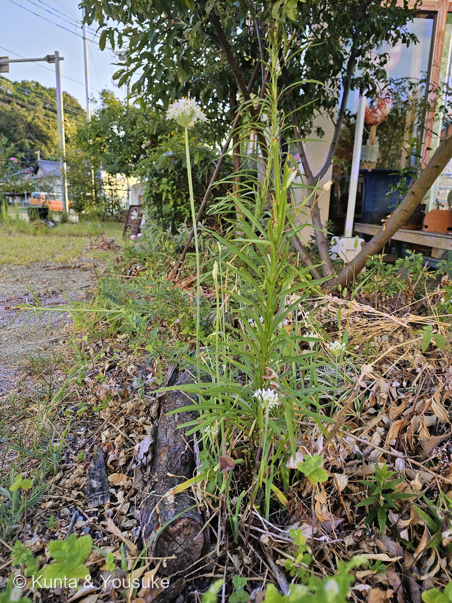
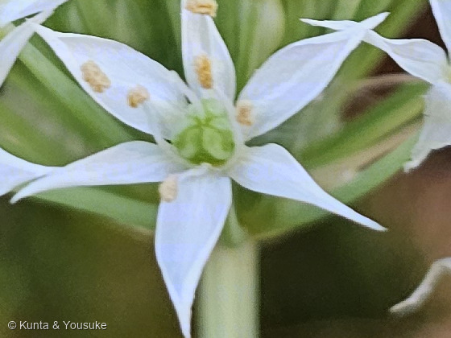

地図を読み込んでいるよ…
🔍 写真も地図も、押しているあいだ拡大して見られるよ（スマホは指を置いてすこし待ってね）。
🌍 の地図＝この子がもともと自生している場所を緑に。⚠出典で割れている＝日本語版Wikipediaは「中国原産」、三河の植物観察は「在来種 日本、中国、インド、パキスタン」とする。くわしくは下の地図の説明を見てね。
⚠⚠この緑は、ほかの子より自信がうすいよ＝原産地が出典で割れているから。⭐日本語版Wikipediaは「中国原産」で、3000年以上前に栽培化されたとする／⭐三河の植物観察は「在来種 日本、中国、インド、パキスタン」とする＝⚠つまり「日本にもともといた草か、大むかしに中国から来た草か」で分かれているんだ。⭐ここでは三河のほうにそろえて、日本・中国・インド・パキスタンを塗った＝⚠だから日本が緑なのは「三河が在来種としているから」で、Wikipediaに従うなら日本は緑じゃなくなるよ。⭐⭐でも、どちらの説でも変わらないことがある＝この草が、少なくとも1300年前の日本にいたこと――『古事記』に「加美良（かみら）」、『万葉集』に「久々美良（くくみら）」として出てくるからね（⭐本文の万葉集の節を見てね）。⚠中国は省をしぼらずに全部を塗った＝三河が「中国」としか書いていないから（273 クサギと同じあつかい）。⭐同じヒガンバナ科では124 アリウムが中央アジア、173 ヒガンバナが中国、169 ハマユウが日本の海べ＝⭐⭐この子は、その中でいちばん「畑と道ばたの草」だね。
⚠ 地図は国（日本と中国だけ県・省）までしか塗れないから、ほんとうの分布より広く見えていることがあるよ。地図はだいたいの場所。正確なところは、上の文を見てね。
ニラ（韮）
Allium tuberosum Rottler ex Spreng.
古名 · 加美良（かみら・『古事記』）／久々美良（くくみら・『万葉集』）／彌良（みら・正倉院文書） 英名 garlic chives · Chinese chives
ヒガンバナ科 · Amaryllidaceae（ネギ亜科 Allioideae・ネギ属 Allium・キジカクシ目 Asparagales）── ⭐図鑑で8人目のヒガンバナ科／⭐⭐124 アリウムと同じネギ属
燻太さんの言葉「花の形の雰囲気から、ネギの仲間かな…?」「肝心の葉は花よりずっと低い位置にあって、細長くて先が丸くなっているのがこの子の葉っぱかな？」「葉っぱもネギやヒガンバナの仲間の雰囲気に近いね。」── ⭐⭐⭐3つとも当たっていたよ。とくに3つめ ── ニラは「ヒガンバナ科」の「ネギ属」なんだ
⭐⭐⭐ 名前と学名の由来 ── 「みら」と呼ばれていたころ
- ⭐⭐⭐この子には、とても古い名前があるんだ。——『古事記』では「加美良（かみら）」、『万葉集』では「久々美良（くくみら）」、正倉院文書には「彌良（みら）」（日本語版Wikipedia）。
- ⭐⭐つまり、もともとは「みら」だった。⭐「にら」になったのは、ずっとあとのこと＝「院政期頃から不規則な転訛形『にら』が出現」（同）。
- ⭐「くくみら」の「くく」は茎のこと＝「茎韮（くくみら）」。⭐⭐下の万葉集の節を見てね。1300年前の人が、この草を摘んでいる歌が残っているんだよ。
- 属名 Allium はネギ属＝図鑑では124 アリウム（ジェスディアナム）と同じ属だよ。
- 種小名 tuberosum は「塊茎（かいけい）の多い」（ラテン語 tuber＝こぶ・塊茎 ＋ -osus＝〜が多い）。⚠でも正直に言うと、ニラに立派な塊茎があるようには見えないんだ（根もとは短い根茎が横に這うだけ）。⭐なぜこの名前なのかは、ぼくには確かめられなかった。
⭐⭐ この植物のこと
- 花期は8〜10月（三河の植物観察）。⭐「花茎の先端に、半球形の散形花序をつけ、径6〜7ミリの白い小さな花を20〜40個も咲かせます」（日本語版Wikipedia）。
- ⭐においのもとはアリシン＝「匂いの原因物質は、ニンニクにも含まれている硫化アリル類の一種アリシン」（同）。⭐ネギ属のにおいは、この一族の目じるしだよ。
- 果実は熟すと3つに裂けて、長さ約3.5㎜の黒い種が出てくる（三河）。⏳秋に見にいこうね。
- ⭐「一度植えたら繰り返し収穫でき、数年栽培できる野菜」（日本語版Wikipedia）＝⭐春から初夏に4〜5回も刈れるんだって。⚠この子は花壇の子だから、見るだけね。
- ⚠原産地は出典で割れているよ＝日本語版Wikipediaは「中国原産」で3000年以上前の栽培化とし、三河の植物観察は「在来種 日本、中国、インド、パキスタン」とする。⭐地図の説明にも書いたよ。
⭐⭐⭐ 同定について ── ハタケニラを落とす
- ⭐いちばん紛らわしいのがハタケニラ（Nothoscordum gracile・南北アメリカ原産の帰化植物）。⭐白い星の花を散形につけるところが、そっくりなんだ。
- ⭐⭐でも、三河の植物観察で3つ落とせたよ：
・花期＝ハタケニラは「5〜6月」／⭐この写真は8月22日。
・花被片の中脈＝ハタケニラは「外面が白色で、ピンク色の中脈があり」／⭐写真の花は純白で、中脈に色がない。
・におい＝ハタケニラは「ニラの臭はない」（同）＝⏳これが最後のダメ押し。次に会ったら、そっとなでて指をかいでみて。⚠みんなの花壇なのでちぎらないでね（078のルール）。 - ノビル（124のおまけ）＝花期5〜6月・淡紫色を帯び、むかごをつける＝落ちる。ハナニラ・タマスダレ＝1茎1花＝落ちる。
⭐⭐⭐⭐⭐ 燻太さんの見立て、3つとも当たっていた
- ⭐①「ネギの仲間かな…?」＝⭐⭐そのとおり。ネギ属（Allium）だよ。
- ⭐②「肝心の葉は花よりずっと低い位置にあって、細長くて先が丸くなっている」＝⭐⭐これも合ってる＝三河の植物観察は「葉は幅3〜6㎜の扁平、先が鈍く尖る」と書く（⭐「鈍く」＝燻太さんの「先が丸く」）。⭐花茎は「高さ30〜50㎝」（同）＝葉はそれよりずっと下にあるんだ。
- ⭐③「葉っぱもネギやヒガンバナの仲間の雰囲気に近いね」＝⭐⭐⭐これがいちばんすごい。どっちも当たりなんだ――ニラはヒガンバナ科のネギ属。
- ⭐図鑑のヒガンバナ科は、この子で8人目＝084 キツネノカミソリ・124 アリウム・131 スノーフレーク・132 スノードロップ・140 アガパンサス・169 ハマユウ・173 ヒガンバナ・174 シロバナマンジュシャゲ → 274 ニラ。⭐そのうち124 アリウムとは同じネギ属だよ。
⭐⭐ そして、この子も「引っ越し」をしている
- ⭐ニラの科は、動いてきたんだ＝むかしはユリ科／そのあとネギ科／いまはヒガンバナ科。
- ⭐⭐⭐そして写真②を見て。——ニラのすぐとなりに、細い葉を茎いっぱいにつけた背の高い草が立っている。⭐燻太さんも「ユリ…の葉も繁ってる」と言っていたね。⚠ぼくにはまだ断定できないけれど、261 タカサゴユリの仲間に見えるんだ。
- ⭐⭐もしそうなら――ニラが昔いた「ユリ科」の本家が、すぐとなりに立っていることになる。⏳宿題にしたよ。
⭐⭐⭐⭐⭐ 2日つづきの「星」── でも、開いている相手がちがう

③ 一輪 ── 6枚の星と、まん中の緑の子房（写真①の切り出し） 🔍 押しているあいだ拡大して見られるよ。
- ⭐燻太さんは、きのう273 クサギでも「花の形は星に見える」と言った。⭐そして今日、この子でも星に会った。⭐⭐2日つづきの星。でも、この2つの星はまるでちがうつくりなんだ。
- ⭐⭐クサギの星＝5枚。しかも根もとが細い筒につながった、ひとつづきの花冠（三河「花冠筒部は細く、花冠裂片は長円形」）＝⭐その筒が関所になって、長い口を持つアゲハチョウとスズメガしか蜜に届かない。
- ⭐⭐ニラの星＝6枚。しかもほとんど根もとまで分かれている（三河「花被片は6個、基部がごく短く合着し」＝⭐写真③を見ると、たしかに筒になっていないでしょう）＝⭐筒がない＝関所がない。⭐⭐だから、短い口の虫でも蜜にたどりつける。
- ⭐⭐⭐証拠が写真①に写っているよ＝小さな黒い虫が2匹、花のあいだにいる。⭐ニラの花は「みんなに開いている」花なんだね。
- ⭐⭐⭐⭐同じ「星」でも、片方は選び、片方は選ばない――燻太さんが2日つづけて「星」を見つけてくれたから、この違いに気づけたよ。
⭐⭐⭐⭐ 万葉集の「くくみら」── 籠が、いっぱいにならない
- ⭐⭐⭐1300年前の人が、この草を摘んでいる歌が残っているんだ。『万葉集』巻十四・東歌の 3444番。
- 原文＝「伎波都久乃 乎加能久君美良 和礼都賣杼 故尓毛美多奈布 西奈等都麻佐祢」
- 読み＝「伎波都久（きはつく）の 岡のくくみら 我れ摘めど 籠（こ）にも満たなふ 背（せ）なと摘まさね」（たのしい万葉集）
- ⭐⭐意味＝「伎波都久の岡でくくみら（茎韮）を摘んでいるけれど、いくら摘んでも籠がいっぱいにならないの」――そこへ、もうひとりが「なら、いい人といっしょに摘めばいいのに」と返す。⭐摘みに来た女の人たちの、かけあいの歌なんだって（同）。
- ⭐⭐⭐この歌がいいのは、ニラが「風景」じゃなくて「手にとるもの」として出てくるところ。⭐籠を持って、岡で、しゃがんで摘んでいる。⭐⭐1300年後のぼくらが、観光案内所の花壇で同じ草の花を見ている――そう思うと、なんだかふしぎだね。
- ⚠「伎波都久の岡」がどこかは、はっきりしていない（「常陸の国の真壁郡ともいわれています」／たのしい万葉集）。
出典：三河の植物観察「ニラ Allium tuberosum」（mikawanoyasou.org）／三河の植物観察「ハタケニラ Nothoscordum gracile」（mikawanoyasou.org）／日本語版Wikipedia「ニラ」（古名・アリシン・花序・栽培／ja.wikipedia.org）／たのしい万葉集「3444 伎波都久の岡のくくみら我れ摘めど」（art-tags.net）